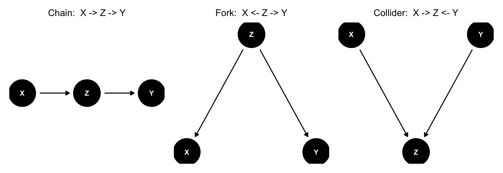
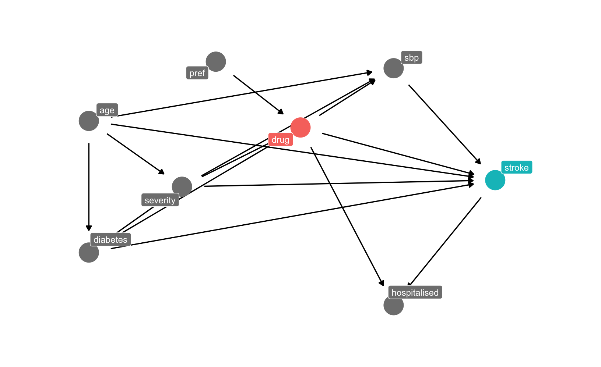
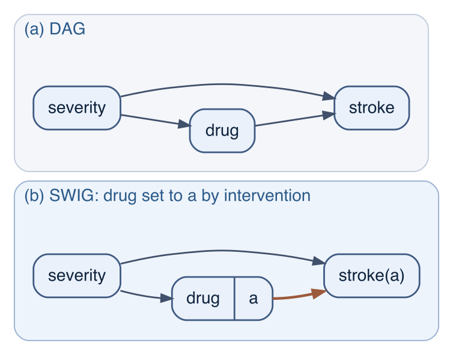

The previous chapter, Chapter 11, gave us a precise question: the effect of a drug is a contrast of potential outcomes, \(E[Y(1)] - E[Y(0)]\), and the crude comparison estimates it only when the treated are exchangeable with the untreated. It also gave us a cure — condition on enough of the right variables — but not which variables those are. “Enough of the right ones” is a claim about how the world produced the data. This chapter is about formalising that claim down as a scheme, and reading off it which variables to adjust for — and, just as important, which to leave alone.
The scheme is a directed acyclic graph (DAG). Causal diagrams were given their modern form for epidemiology by Greenland, Pearl and Robins;1 the remarkable result is that a few simple rules about arrows decide every adjustment question, and that the rules sometimes contradict the common reflex to “control for everything you can”.
12.1 A graph of causal assumptions
A DAG has three ingredients.
Nodes are variables — severity, drug, stroke.
A directed edge\(A \rightarrow B\) says \(A\) may exert a direct causal effect on \(B\). The direct effect in this context does not say anything about the biological mechanism, it merely notes that if we intervene on \(A\), holding the rest of the graph’s logic fixed, then \(B\) can change. So, “Direct” means not routed through another node already drawn.
Acyclic means you cannot follow the arrows and return to where you started. Nothing is its own ancestor; causes precede effects.
A path is any route between two nodes along the edges, ignoring their direction. A directed path follows the arrows head-to-tail. \(B\) is a descendant of \(A\) if a directed path runs from \(A\) to \(B\).
The single most important thing about a DAG is what it does not contain. Drawing \(A \rightarrow B\) is a weak claim: there might be an effect. Omitting the arrow is a strong one: there is no direct effect, in any individual, of any size. A DAG is therefore a compact statement of causal assumptions, brought to the data from subject knowledge — physiology, study design, common sense — and not learned from the data themselves. The data can occasionally embarrass a DAG (see the fine print below), but they can never hand you one.
12.2 The three elementary structures
Every path, however long, is assembled from three elementary three-node pieces. Learn how each one transmits or stops association (Figure 12.1) and you can read any graph.
Show code
co <-list(x =c(X =0, Z =1, Y =2), y =c(X =0, Z =0, Y =0))chain <-dagify(Z ~ X, Y ~ Z, coords = co)fork <-dagify(X ~ Z, Y ~ Z, coords =list(x =c(X =0, Z =1, Y =2),y =c(X =0, Z =1, Y =0)))coll <-dagify(Z ~ X, Z ~ Y, coords =list(x =c(X =0, Z =1, Y =2),y =c(X =0, Z =-1, Y =0)))mk <-function(d, ttl) ggdag(d, node_size =16, text_size =3.2, edge_type ="link") +theme_dag() +ggtitle(ttl) +theme(plot.title =element_text(size =12, hjust =0.5))mk(chain, "Chain: X -> Z -> Y") |mk(fork, "Fork: X <- Z -> Y") |mk(coll, "Collider: X -> Z <- Y")

Figure 12.1: The three elementary structures. A chain and a fork both transmit association along the path; a collider does not. The grey node is the one a path runs through.
A chain, \(X \rightarrow Z \rightarrow Y\), is mediation. \(Z\) is a mediator: the effect of \(X\) on \(Y\) runs through it. \(X\) and \(Y\) are associated; condition on \(Z\) and the association is blocked, because once you fix the middle of the relay there is nothing left for \(X\) to tell you about \(Y\).
A fork, \(X \leftarrow Z \rightarrow Y\), is confounding. \(Z\) is a common cause. \(X\) and \(Y\) are associated even though neither causes the other — a purely spurious correlation. Condition on \(Z\) and it blocks: within a level of \(Z\) the spurious channel is shut.
A collider, \(X \rightarrow Z \leftarrow Y\), is the mirror image of the fork. \(Z\) is a common effect. Here \(X\) and \(Y\) are not associated through \(Z\) — the path is blocked by default. Conditioning on \(Z\) does the opposite of what it does in the other two structures: it opens the path and creates a spurious association.
The collider’s reversal is worth a sentence of intuition. If \(Z\) is high and depends on both \(X\) and \(Y\), then learning that \(X\) is low tells you \(Y\) is probably high — because something had to push \(Z\) up. Two independent causes of a shared effect become dependent once you hold the effect fixed. We will see that this is the engine of selection bias.
12.3 What adjustment does: three simulations
The claims above are nothing more than arithmetic, and on data whose truth we control we can watch each DAG structure happen. In every panel below “adjustment” is just adding the middle node to a linear regression of \(Y\) on \(X\), and there is no direct \(X \rightarrow Y\) effect anywhere. Every \(X\)–\(Y\) association we see is structural.
n <-5000## FORK: X <- Z -> Y (Z is a confounder; no X -> Y)Z <-rnorm(n); X <-0.9* Z +rnorm(n); Y <-0.9* Z +rnorm(n)fork_crude <-coef(lm(Y ~ X))["X"] # spurious associationfork_adj <-coef(lm(Y ~ X + Z))["X"] # adjust the confounderc(crude = fork_crude, adjusted_for_Z = fork_adj)
crude.X adjusted_for_Z.X
0.41929838 -0.00800076
In the fork, the crude slope is a clear 0.42 — a confound posing as an effect — and conditioning on \(Z\) collapses it to -0.01. This is the case the reflex gets right: adjust for the common cause.
## CHAIN: X -> M -> Y (M is a mediator; no direct X -> Y)X <-rnorm(n); M <-0.9* X +rnorm(n); Y <-0.9* M +rnorm(n)chain_total <-coef(lm(Y ~ X))["X"] # the total effect of Xchain_adj <-coef(lm(Y ~ X + M))["X"] # adjust the mediatorc(total = chain_total, adjusted_for_M = chain_adj)
total.X adjusted_for_M.X
0.816156525 0.005980602
In the chain, the crude slope 0.82 is the effect of \(X\) on \(Y\) — the thing we want. Conditioning on the mediator \(M\) destroys it, leaving 0.01. Here the reflex is wrong: control for \(M\) and you have adjusted away the very effect you set out to measure. The same drug, the same data, the wrong number.
## COLLIDER: X -> C <- Y (C is a common effect; X and Y are independent)X <-rnorm(n); Y <-rnorm(n); C <-0.9* X +0.9* Y +rnorm(n)coll_crude <-coef(lm(Y ~ X))["X"] # truly independentcoll_adj <-coef(lm(Y ~ X + C))["X"] # condition on the colliderc(crude = coll_crude, adjusted_for_C = coll_adj)
crude.X adjusted_for_C.X
-0.01024442 -0.45277671
In the collider, \(X\) and \(Y\) are independent by construction, and the crude slope duly sits at -0.01. Condition on \(C\) and an association of -0.45 appears from nowhere. Adjusting created the bias. No amount of data fixes this; more rows estimate the spurious slope more precisely.
Three structures, three different right answers, one wrong reflex. “Control for everything you can measure” silently treats every variable as a fork. It is correct for confounders, ruinous for mediators, and actively bias-inducing for colliders. The graph is what tells them apart.
12.4 One rule that binds them all: d-separation
The three above cases are special instances of a more general criterion. Take any path between \(X\) and \(Y\), and a set of variables \(Z\) you have conditioned on. The path is blocked if either:
it contains a non-collider (a chain link or a fork centre) that is in\(Z\); or
it contains a collider that is not in \(Z\) — and none of that collider’s descendants is in \(Z\) either.
If every path between \(X\) and \(Y\) is blocked, they are d-separated given \(Z\), and the graph guarantees they are statistically independent given \(Z\). If even one path is open, they are d-connected and we expect an association.
Two corollaries: (i) Conditioning on a non-collider helps — it shuts a path. (ii) Conditioning on a collider, or on anything downstream of one, hurts by opening a path that was closed. That thing about downstream descendants is the subtle part: you need not put the collider itself in \(Z\) to do the damage; a proxy for it — a variable it causes — is enough. To the grief of many a epidemiologist, selection into a sample is such a proxy.
12.5 The back-door criterion
Now comes the payoff. We want the causal effect of an exposure \(A\) on an outcome \(Y\). The paths from \(A\) to \(Y\) come in two kinds:
Causal (directed) paths, \(A \rightarrow \dots \rightarrow Y\), which start with an arrow out of\(A\). These carry the effect; we must leave them open.
Back-door paths, which start with an arrow into\(A\) (e.g. \(A \leftarrow Z \rightarrow Y\)). These carry confounding; we must close them all.
A set \(Z\) satisfies the back-door criterion for the effect of \(A\) on \(Y\) when
no node in \(Z\) is a descendant of \(A\) (so we touch neither mediators nor colliders on the causal side), and
\(Z\) blocks every back-door path from \(A\) to \(Y\).
When such a \(Z\) exists, conditioning on it makes the treated and untreated exchangeable within levels of\(Z\). This is the conditional exchangeability of Chapter 11, and we can say that the effect is identified, which simply means that we may estimate it by standardising or weighting over \(Z\) (Chapter 13). The three structures reappear as epidemiological vocabulary: an open back-door path is confounding; a directed path is mediation (block it and you lose part of the effect); a path opened by conditioning on a common effect is selection bias.
Crucially, the back-door criterion can forbid adjustment. A mediator is a descendant of \(A\), so rule 1 keeps it out of \(Z\) for the total effect. A collider, if not conditioned on, already blocks its path, so adding it can only do harm.
12.6 The master cohort, as a graph
Our running cohort — does a blood-pressure drug prevent stroke? — is built from a known data-generating process (R/simulate_cohort.R). Every structural equation is one or more arrows, and together they make Figure 12.2.
mc <-dagify( diabetes ~ age, severity ~ age + diabetes, drug ~ severity + diabetes + pref, # confounding-by-indication + instrument sbp ~ age + severity + drug, # the drug lowers blood pressure stroke ~ severity + age + diabetes + sbp + drug, hospitalised ~ drug + stroke, # a common effectexposure ="drug", outcome ="stroke",coords =list(x =c(age =0, diabetes =0, severity =1.1, pref =1.5, drug =2.5, sbp =3.6,stroke =4.8, hospitalised =3.6),y =c(age =2.6, diabetes =0.6, severity =1.6, pref =3.5, drug =2.5, sbp =3.4,stroke =1.7, hospitalised =-0.2)))
Show code
ggdag_status(mc, text =FALSE, use_labels ="name",node_size =9, text_size =3.2, edge_type ="link") +theme_dag() +guides(color ="none", fill ="none") +theme(legend.position ="none") +expand_limits(x =c(-0.4, 5.4), y =c(-0.6, 3.9))

Figure 12.2: The master-cohort DAG. drug (exposure) and stroke (outcome) in blue; severity and diabetes are common causes (confounders); sbp is a mediator on the causal path drug -> sbp -> stroke; pref is an instrument; hospitalised is a collider (a common effect of drug and stroke).
Reading off it: severity and diabetes sit on forks into both drug and stroke — they are the confounders. sbp is the mediator, lying on the causal path drug → sbp → stroke (the drug works in part by lowering blood pressure). pref, the prescribing preference, points only into drug: it is an instrument (Chapter 18), not a confounder. And hospitalised is a collider — a common effect of treatment and stroke — laying off to the side.
We need not eyeball which adjustments are valid; the graph computes them.
dagitty returns { diabetes, severity }: blocking the two forks suffices for the total effect, and age and pref are optional (adjusting age is harmless; adjusting the instrument pref is allowed but pointless and, in general, can hurt precision). Notice what is absent: sbp is never in an adjustment set for the total effect, because it is a mediator; hospitalised never appears, because it is a collider.
The cohort was engineered so the crude analysis reverses the truth. The graph predicts exactly that — there is a wide-open back-door drug ← severity → stroke — and predicts the cure.
df <-simulate_cohort(n = N_COHORT, seed =2024)df$age_c <- (df$age -62) /10truth <-cohort_truth(df)crude_RR <-with(df, mean(stroke[drug ==1]) /mean(stroke[drug ==0]))g_RR <-function(rhs) { # standardise (a peek at the stratification chapter) m <-glm(as.formula(paste("stroke ~", rhs)), binomial, df) r1 <-mean(predict(m, transform(df, drug =1), type ="response")) r0 <-mean(predict(m, transform(df, drug =0), type ="response")) r1 / r0}c(crude = crude_RR,backdoor_set =g_RR("drug + severity + age_c + diabetes"),plus_mediator_sbp =g_RR("drug + severity + age_c + diabetes + sbp"),TRUTH = truth$ATE_RR)
crude backdoor_set plus_mediator_sbp TRUTH
1.6720717 0.6158682 0.7323107 0.6000866
The crude risk ratio is 1.67 — the drug looks harmful. Adjust for the back-door set the graph prescribed (with age added, which the graph says is harmless) and it flips to 0.62, essentially the true 0.6: protective. Now obey the reflex and “adjust for blood pressure too”: the estimate drifts back to 0.73, because sbp is a mediator and conditioning on it blocks the very pathway the drug acts through. The graph said all of this in advance. (The estimation machinery — standardisation — is Chapter 13’s subject.)
What if we wanted the drug’s direct effect, which is the part not mediated by blood pressure? The reflex — “add the mediator” — is again not the whole story:
To block the mediated path we must condition on sbp — but doing so opens the collider drug → sbp ← age → stroke (blood pressure is a common effect of the drug and of age), which must then be re-closed by adding age. The valid set is { age, diabetes, severity, sbp }, not sbp alone. Direct effects are graphically treacherous; Chapter 16 takes up mediation properly.
12.7 Selection bias is collider bias
Oftentimes, conditioning on a collider is what sampling does. When a study includes only hospitalised patients, only volunteers, only survivors, or only the non-lost-to-follow-up, it has conditioned on variables that those things depend on. If any of these variables is a common effect of the exposure and the outcome (or of their causes), the selection opens a back-door path and biases the estimate, even with no confounding at all. Hernán, Hernández-Díaz and Robins showed that the textbook menagerie of “selection biases” — Berkson’s bias, informative censoring, inappropriate control selection — is one structure wearing many hats: conditioning on a common effect.2
Our hospitalised node is the canonical case. Both the drug (drug → hospitalised) and a stroke (stroke → hospitalised) raise the chance of admission. Restrict the analysis to inpatients and watch:
Among the hospitalised the crude risk ratio is 0.87 — pulled away from the truth purely by the act of selection, with no confounder touched. (Within a ward, treated patients are over-represented among the not-very-sick admissions, so the treated and untreated are no longer comparable.)
The pattern recurs across epidemiology, and it really does reverse conclusions:
Berkson’s bias. Two independent diseases appear correlated in a hospital sample, because having either raises the chance of admission — the admission is the collider.
The “birth-weight paradox”. Among low-birth-weight infants, maternal smoking appears protective against infant mortality. Hernández-Díaz, Schisterman and Hernán used a DAG to show this is collider bias: birth weight is a common effect of smoking and of unmeasured causes of mortality, so stratifying on it manufactures the inverse association.3 The drug-sbp collider we just met for the direct effect is the same structure.
COVID-19 risk factors. Griffith and colleagues showed that analysing only people tested for SARS-CoV-2 (a sample selected on health-care contact, symptoms and behaviour) induces collider associations strong enough to distort estimated risk factors for infection and severity.4
This is also the formal resolution of a familiar intuition trap: the mind, which is good at imagining how two things might share a cause, is bad at noticing when it has accidentally selected on a shared effect.
12.8 The fine print
A DAG is a powerful instrument with sharp edges, and honesty about its limits is part of using it.
It encodes assumptions, not findings. The arrows come from substantive knowledge. A wrong graph gives confident, wrong advice. Two analysts with different DAGs can both adjust “correctly” and disagree — the disagreement is about the science, which is where it belongs, now made explicit.
It is mostly untestable — but not entirely. A DAG implies a list of conditional independencies that the data can contradict. Our graph implies, for instance, that the instrument is independent of the confounder, pref ⊥ severity:
round(cor(df$pref, df$severity), 3) # the DAG implies ~ 0
[1] 0.002
The observed correlation is 0.002. A gross violation would falsify the graph; agreement is reassuring but never proves it, since many different DAGs can share the same independencies.
It is nonparametric. A DAG says whether a path transmits association, never how much. It cannot tell you the magnitude or even the direction of a bias — only that one is present. Quantifying “how bad could an unmeasured confounder be?” is the job of sensitivity analysis (Chapter 20), which leans on the fact that our severity is only partly measured.
It assumes the standard background conditions — the causal Markov condition (a variable is independent of its non-descendants given its parents), no hidden cycles, and a coherent time order. Feedback over time, where sbp is a confounder of later treatment and a mediator of earlier treatment, breaks the single static picture and needs the time-indexed graphs of Chapter 15.
What the DAG buys, in return, is what Chapter 11 could not provide: a procedure, checkable by anyone, for turning a causal story into lists of variables to adjust, and not to adjust, for.
12.9 What a DAG cannot show: interaction
A DAG is nonparametric. It records that a cause acts on an outcome, not the shape of that action, so effect modification, dose-response, thresholds and synergy cannot be read off it. Two data sets generated from the same graph A → Y ← V, one in which A helps everyone equally and one in which it helps only when V = 0, license the same adjustment set and are indistinguishable on the diagram. The simulation that shows this is in Chapter 17, which also takes up the further complication that whether interaction is present at all depends on the scale, on which the graph is equally silent.
This is also a strength. Because the graph commits to no functional form, its verdicts about confounding and adjustment hold whatever the form turns out to be: d-separation holds however A and V combine to make Y. The working rule is to first use the DAG to decide what to condition on, and then to build and compare specific model structures (Chapter 17, Chapter 21 to Chapter 22) to see how the effect behaves.
Reading exchangeability off a graph: SWIGs
The back-door criterion and the conditional exchangeability of Chapter 11 are the same assumption presented in different notations. The backdoor criterion is stated on a graph, while exchangeability, \(Y(a) \perp A \mid L\), is a statement about a potential outcome, which appears on no DAG. Richardson and Robins joined the two with the single-world intervention graph (SWIG).5 A SWIG is made from a DAG by splitting the treatment node in two: one half keeps the arrows into the treatment and stands for the treatment as it was received; the other half is fixed at the intervention value \(a\), and the arrows out of the treatment now run from it. Every descendant of the treatment is relabelled as its potential outcome under that intervention, stroke(a) in place of stroke. d-separation is then applied to the new graph as usual, with the fixed half treated as a constant rather than a variable, and every independence it returns is a statement about counterfactuals.
The construction in Figure 12.3 is for the core of the master cohort. In the SWIG the only path from drug to stroke(a) runs through severity, so stroke(a) is d-separated from drug given severity: this is \(Y(a) \perp A \mid L\) with \(L\) = severity, read off a picture instead of assumed in a formula. Without the conditioning the path is open, which is the confounding by indication that reverses the crude comparison. The book draws DAGs for identification because they are simpler to draw and to read; a SWIG is the tool to reach for when the question is which counterfactual independence a graph implies, which matters most for the time-varying treatments of Chapter 15, where the potential outcome depends on a whole treatment history.

Figure 12.3: The core of the master cohort as a DAG (a) and as a single-world intervention graph (b). The SWIG splits the treatment node: the left half, drug, keeps the arrows into it and is the treatment as received; the right half, a, is the value set by intervention, and the arrows out of the treatment run from it. Every descendant is relabelled as its potential outcome under that intervention, stroke(a). In (b) the only path from drug to stroke(a) runs through severity, so stroke(a) is d-separated from drug given severity: conditional exchangeability, read off the graph.
A different diagram appears in Chapter 17: Rothman’s sufficient-component-cause diagrams, a.k.a. the “causal pies”. A DAG draws variables and the direct effects between them. A causal pie draws a mechanism: a set of component causes that together suffice for the outcome, and asks which factors are components of the same sufficient cause. That is mechanistic interaction, a property of how causes combine within an individual, and, like statistical interaction, it is not represented by the arrows of a DAG.
12.10 Drawing a DAG: a step-by-step
A DAG is only as good as the thinking behind it, and that thinking has a workable routine. The order matters: most mistakes come from drawing arrows before fixing the question and the time line.
State the question first. Name the exposure A, the outcome Y, the estimand (total effect? direct effect? — they need different graphs and different adjustment sets, as we saw above), the target population, and time zero, the moment from which follow-up is counted (Chapter 14). A DAG is built for a question; you cannot draw one in the abstract.
List the variables, generously. Write down A, Y, and every plausible common cause of them you can think of — measured and unmeasured. Do not filter yet: a variable left off the page is a stronger assumption than one drawn on it.
Put them in time order. Lay the nodes out left to right by when each is determined; arrows may only point forward in time. This one discipline prevents cycles and exposes the commonest blunder — treating a post-exposure variable as a baseline confounder.
Draw the direct effects. For each ordered pair ask: would intervening on the earlier variable change the later one, by a route not already drawn through another node? If yes, draw the arrow. “Direct” is always relative to the variables on the page.
Add unmeasured common causes explicitly. If two nodes share a cause you did not measure, draw it as a latent node U. This is where most confounding hides, and an honest U is worth more than a tidy graph that pretends it away.
Be conservative with arrows, not with nodes. When unsure whether a confounding arrow belongs, include it — omission is the strong claim. But do not invent implausible arrows just to look safe; every arrow is a claim you must be able to defend.
Read the missing arrows back. For each absent edge, say it aloud: “I am asserting no direct effect here, in any patient, of any size — am I comfortable with that?” If not, add it. Then confirm the graph is acyclic.
Label the roles. Mark A and Y, and classify every other node — confounder (fork), mediator (on a causal path), collider (common effect), instrument, competing exposure. The role dictates the treatment, not the variable’s name or how “important” it feels.
Find the adjustment set, then sanity-check it. Derive it by hand (block every back-door path; touch no descendant of A) or with software, then ask whether positivity is plausible for it: are there treated and untreated patients at every combination of its values (Chapter 11)?
Test what is testable. The graph implies conditional independencies; check a few against the data. A gross violation means the graph — not the data — is wrong.
Show it, and draw the rivals. Hand the DAG to a colleague who knows the substance, then draw the alternative DAGs you cannot rule out and see whether the adjustment set survives them. Where it does not, that is the target for sensitivity analysis (Chapter 20).
The dagitty/ggdag workflow makes steps 7–10 mechanical:
library(dagitty); library(ggdag)g <-dagify(Y ~ A + L + U, # the outcome's direct causes A ~ L + U, # the exposure's direct causes (L measured, U not)exposure ="A", outcome ="Y",latent ="U") # mark the unmeasured nodeggdag(g) # step 7: eyeball the structureadjustmentSets(g) # step 9: a valid set, if one existsimpliedConditionalIndependencies(g) # step 10: what the data can falsify
If adjustmentSets() comes back empty, no measured set identifies the effect — the honest signal to reach for an instrument (Chapter 18), a quasi-experiment (Chapter 19), or a sensitivity analysis (Chapter 20), rather than to keep piling on covariates.
Five mistakes the routine is built to prevent.
Adjusting for a mediator — or any descendant of the exposure — which blocks part of the very effect you want (the drug → sbp lesson, and the “Table 2 fallacy” of Chapter 22).
Conditioning on a collider, most insidiously through sample selection.
Reversed or muddled time order, which lets a consequence masquerade as a cause.
Forgetting unmeasured common causes — the tidy-graph trap of step 5.
Choosing variables by what moves the estimate — a stepwise habit that will happily add colliders and drop confounders, because “it changed the coefficient” is not evidence that adjustment was warranted.
12.11 Structural equations: the model behind the graph
A DAG, we keep saying, throws away the functional form and keeps only the arrows. It is worth seeing exactly what it throws away, because that fuller object — a structural causal model (SCM) — is something this book has been using all along.
An SCM writes one equation per variable, expressing it as a function of its direct causes (its parents on the graph) and an independent disturbance \(U\): \[ V_i \;=\; f_i(\text{parents}_i,\; U_i). \] The arrows of the DAG are read straight off these equations: draw an edge from every argument of \(f_i\) into \(V_i\). The graph is the skeleton of the SCM — what is left when you forget each \(f_i\) and the distribution of each \(U_i\): \[ \text{SCM} \;=\; \text{DAG} \;+\; \text{functional forms} \;+\; \text{noise distributions}. \] This is why a DAG cannot show interaction (the section above): modification, dose–response and scale are all inside the \(f_i\), which the DAG has discarded.
The master cohort makes it concrete, because R/simulate_cohort.Ris an SCM: a system of structural equations, read top to bottom in causal order. A few of them, schematically:
The DAG drawn earlier in this chapter is exactly the skeleton of this code: every coefficient is an arrow, every rnorm/rbinom an independent \(U\). We have been reasoning about the shadow of a model whose every detail we happen to know — which is what lets it serve as an answer key.
Intervention is surgery on the equations. To ask “what if everyone took the drug?”, the SCM does not nudge a coefficient; it deletes the equation for drug and replaces it with the constant 1, leaving every other equation untouched. On the graph this is graph surgery — erase the arrows intodrug, keep the arrows out — and it is Pearl’s \(do(\text{drug}=1)\) operator. It is identical to the potential outcome \(Y(1)\) of Chapter 11, and it is exactly how the cohort’s oracle was built: evaluate the outcome equation under drug = 1 and again under drug = 0, on the same draws of the noise.
truth$ATE_RD # E[Y(1)] - E[Y(0)]: the outcome equation under do(drug=1) vs do(drug=0)
[1] -0.02723611
The back-door criterion is, underneath, a claim about this surgery: a set blocks the back-door paths exactly when adjusting for it makes the observed association equal to the association in the mutilated graph — the world in which the arrows into drug have been cut.
Where classical SEM fits. The structural-equation models of the path-analysis tradition — linear equations, standardised “path coefficients”, often with latent factors — are the linear-Gaussian special case of an SCM: assume every \(f_i\) is linear and every \(U_i\) Gaussian, and d-separation collapses to Wright’s old rules for tracing paths. The modern advance was not the equations, which are a century old, but the separation of concerns: the DAG carries the causal assumptions (qualitative, arguable from knowledge) while the equations carry the estimation assumptions (functional form, distributions). Classical SEM tended to fuse the two, and so could not say which of its conclusions rested on causal belief and which on convenient linearity.
Wright’s path-tracing rules
Sewall Wright invented path analysis in the 1920s — the direct ancestor of structural equation modelling, and decades ahead of formal DAGs.6 In a standardised linear model (every variable scaled to unit variance), Wright showed that the correlation between two variables is the sum, over every open path joining them, of the product of the path coefficients along that path.
A path counts as open (traceable) when
it never passes through a collider — a variable entered by two arrowheads, \(\rightarrow \bullet \leftarrow\);
it changes direction at most once, and only at a common cause (you may trace backwards against the arrows and then forwards, never forwards and then backwards); and
no variable appears on it twice.
So for a fork \(X \leftarrow Z \rightarrow Y\) with coefficients \(a\) and \(b\), the implied correlation is \(r_{XY} = ab\); for a chain \(X \rightarrow Z \rightarrow Y\) it is likewise \(ab\); for a collider \(X \rightarrow Z \leftarrow Y\) there is no open path, so \(r_{XY} = 0\). Add a direct edge \(X \rightarrow Y\) with coefficient \(c\) to the fork and the two open paths simply add: \(r_{XY} = c + ab\).
These are the three elementary structures of this chapter, and “open path” is exactly an unconditioned path with no collider. Wright’s rules are therefore the linear, unconditioned special case of d-separation: because his model was linear he could keep the magnitudes — the products and sums of coefficients — whereas d-separation discards the magnitudes and keeps only the qualitative open-or-blocked verdict. That is precisely what lets d-separation survive when the functions are nonlinear and the question is “adjust or not?” rather than “what is the correlation?”.
That separation is the division of labour the rest of the book runs on:
The DAG settles identification — can the effect be recovered from the data at hand, and what must be adjusted? This needs only qualitative knowledge and is robust to the functional form.
A fitted structural model settles estimation — what is the number, with what uncertainty? This is regression read as a counterfactual machine (Chapter 21 to Chapter 23) and, in full, Bayesian g-computation (Chapter 29), where the outcome equation is fit and then operated on — do(drug = 1) versus do(drug = 0) — to read off the contrast.
The two are not interchangeable, and the order is not negotiable. A richer functional form cannot rescue a wrong DAG: if the graph omits a confounding arrow, no regression, however flexible, recovers the effect. Identification first, estimation second — the graph tells you whether there is a number worth estimating; the equations tell you what it is.
12.12 Key points
A DAG is a statement of causal assumptions: nodes are variables, an arrow is a possible direct effect, and a missing arrow is the strong claim of no direct effect.
Every path is built from three structures. A chain (mediator) and a fork (confounder) transmit association and are blocked by conditioning; a collider (common effect) blocks by default and is opened by conditioning on it or its descendants.
“Control for everything” is wrong. It is right only for confounders; it adjusts away effects when applied to mediators and manufactures bias when applied to colliders.
d-separation is the single rule that decides independence; the back-door criterion applies it to pick a valid adjustment set — block every back-door path, touch no descendant of the exposure.
A valid back-door set delivers the conditional exchangeability of Chapter 11, so the effect can be standardised or weighted (Chapter 13). For the master cohort the total-effect set is { severity, diabetes }; sbp (mediator) and hospitalised (collider) must be excluded.
Selection bias is collider bias: sampling on a common effect of exposure and outcome opens a path and biases the estimate with no confounding present.
A DAG is nonparametric: it shows whether causes act, never how they combine. Effect modification and interaction are invisible on it, and the very presence of interaction can depend on scale (Chapter 17). Use the graph to choose what to adjust for; use a model to describe how the effect behaves.
A DAG is the skeleton of a structural causal model — one equation per variable, \(V = f(\text{parents}, U)\), with the functions and noise forgotten. The DAG identifies the effect (what to adjust); the fitted equations estimate it (Chapter 21, Chapter 22, Chapter 25 and Chapter 29). Intervention is surgery on the equations (\(do(\cdot)\)), and a wrong graph cannot be fixed by better equations.
12.13 Exercises
Read a graph by hand. In the master-cohort DAG, list every back-door path from drug to stroke. Confirm that { severity, diabetes } blocks all of them and that none of those paths is opened by the adjustment. Check your answer with paths(mc, "drug", "stroke") and adjustmentSets(mc).
The collider, by simulation. Re-run the collider mini-simulation, but vary the strength of X -> C and Y -> C from 0 to 1.5. Plot the induced (conditioned-on-C) association against the edge strength. When is collider bias negligible, and when is it larger than a typical confounding bias?
Adjust away an effect. Using the master cohort, estimate the drug–stroke risk ratio adjusting for the back-door set, then again adding sbp. Reproduce the drift towards the null and explain, in terms of the graph, exactly which path the second model blocks.
Selection on a descendant. Add a node discharged_well that is caused by hospitalised (a descendant of the collider). Show — by simulation or by d-separation — that conditioning on discharged_well also biases the drug–stroke association, even though it is not the collider itself.
Draw before you adjust. Pick a published observational study you know. Draw its DAG, mark exposure and outcome, and use adjustmentSets() to find a valid set. Did the study adjust for a mediator or a collider? Would the graph have warned them?
Conceptual. A colleague proposes choosing adjustment variables by stepwise selection: keep whatever changes the exposure coefficient by more than 10%. Using the three elementary structures, explain why this rule will sometimes include a collider and sometimes drop a confounder — and why “it changed the estimate” is not evidence that adjustment was warranted.
Draw your own, by the routine. Take a causal question from your own field and work the eleven-step routine end to end: state the estimand, list and time-order the variables (including at least one unmeasured U), draw the arrows, and use adjustmentSets() and impliedConditionalIndependencies(). If no adjustment set exists, say what you would do instead.
Surgery, not selection. Using R/simulate_cohort.R, contrast two operations on the cohort: (a) selecting the subgroup with drug == 1 and averaging their observed stroke risk; and (b) intervening with do(drug = 1) — the oracle’s risk1, the outcome equation recomputed with drug set to 1 for everyone. Why do the two averages differ, and which one equals \(E[Y(1)]\)? Explain, in terms of the structural equations, what selecting does that surgery does not.
Greenland S, Pearl J, Robins JM, “Causal diagrams for epidemiologic research,” Epidemiology 1999;10:37-48 (PMID 9888278; PubMed).↩︎
Hernández-Díaz S, Schisterman EF, Hernán MA, “The birth weight "paradox" uncovered?,” Am J Epidemiol 2006;164:1115-1120 (DOI).↩︎
Griffith GJ, Morris TT, Tudball MJ, Herbert A, Mancano G, Pike L, Sharp GC, Sterne J, Palmer TM, Davey Smith G, Tilling K, Zuccolo L, Davies NM, Hemani G, “Collider bias undermines our understanding of COVID-19 disease risk and severity,” Nat Commun 2020;11:5749 (DOI).↩︎
Richardson TS, Robins JM, Single World Intervention Graphs (SWIGs): A Unification of the Counterfactual and Graphical Approaches to Causality, Center for Statistics and the Social Sciences, University of Washington, Working Paper 128, 2013 (https://csss.uw.edu/files/working-papers/2013/wp128.pdf); for an epidemiological introduction, Bezuidenhout D, Forthal S, Rudolph K, Lamb MR, “Single World Intervention Graphs (SWIGs): A Practical Guide,” Am J Epidemiol 2025;194:2047-2052 (DOI).↩︎
Wright S, “Correlation and causation,” J Agric Res 1921;20:557-585.↩︎